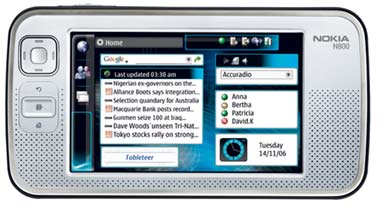
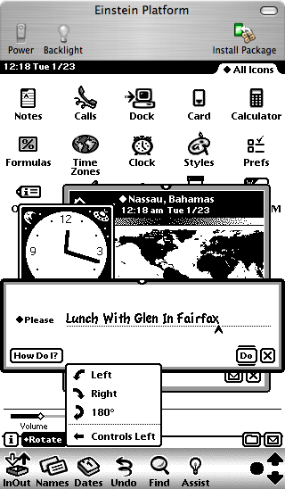
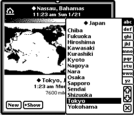

 [Note: This is a living page and I am periodically adding to it as I find new issues. If Nokia fixes things in a future release, I will be sure to note it.]
I'm a former spare-time Newton MessagePad user and software developer. I wrote, among other things, the Waba for the Newton Java virtual machine and the Hemlock Internet Search Tool for the Newton. And a lot of Chinese applications. I think I qualify as a power user and developer. I'm also an okay UNIX hacker, though I'm better on BSD than on Linux, much less uLinux/BusyBox.
I recently purchased a Nokia N800 Internet Tablet to replace my aging Newton MessagePad 2100. The MessagePad's touchscreen is going bad and with the advent of Intel Macs, I can no longer do any software development for it. This is what makes the N800 particularly attractive to me: it's a 100% Linux box with phenominal features, and enables me to throw some code around again. Woohoo! Plus eventually, with luck, I might get Einstein running on it. Einstein is a Newton emulator which runs (slowly) on N800's predecessor (the 770). The idea is not to convert the N800 to a Newton -- for me, that would be foolish -- but to give grumpy Newton users an easy way to migrate to a new platform. And to open up a whole new set of applications to N800 users. Indeed, in the primary Newton forum I told others that the N800 was the first PDA I'd recommend as a Newton replacement.
The N800 is a great machine. Technologically speaking, the N800 is a dramatic advance over the Newton. At right is a Newton MessagePad 2100. It's an old monster. Its screen is twice the size of the N800, but it's only 320x480. It's much larger and heavier than the N800, mostly due to NiMH batteries. It does have a much better stylus, so much so that I keep it in my N800's bag. [Bag hint for N800 Owners: the N800 is about the same size and shape as the Nintendo DS Lite]. In contrast, the N800 has true multitasking. It has a CPU that's twice the speed. It has 32 times as much SDRAM. It has a color screen, and built-in 802.11 and bluetooth (Newton users hack wireless and bluetooth with public domain plug-ins and cards). It has a flat memory model and 2 SD cards rather than 2 PCMCIA slots. It's got a client USB rather than serial ports. It's got a great, modern web browser with JavaScript and Flash.
I like the N800. That's why I bought it. But as great as the N800 is, and as much of an advance it represents technologically over my 10-year-old MessagePad, I am surprised at how much more sophisticated the MessagePad is than the N800 in terms of user experience.
The point of this essay is to discuss places where Nokia could improve the N800 quickly and easily, particularly from a Newton viewpoint. But it might be useful first to mention some areas where the Newton really shines compared to the N800, but which the N800 probably will never (and in some cases should never) adopt simply because the change in technology would require too large a tradeoff in other areas. Unfortunate but probably necessary given the N800's intended purpose. After this I'll discuss some things that Nokia can (and should) steal from the Newton immediately. Second, I'll discuss some stupidities in the N800's interface, independent of Newton discussion, which Nokia ought to fix as soon as possible. Third, I'll mention some serious interface failures of individual applications which come with the device.
Great Things the Newton Has that the Nokia Doesn't
(...and Maybe Shouldn't)
- The Newton uses an object-oriented database as its backing store for all applications. All of an application's documents are immediately in this database as soon as they are created or modified. No need to "save" files or "open" files -- they're just there. Newton apps know where all of their documents are on the machine, and can sort them all, perform sophisticated searches on them, file them, move them from card to card to internal store, bundle them up and beam them to other Newtons, etc. It's all highly consistent and elegant.
The N800 uses a file system similar to a PC. This makes for a surprisingly worse user experience, but on the other hand it allows for better interoperability with PCs via sharing cards etc., and it allows for easier porting of applications, so that's an unfortunate but probably worthy tradeoff nowadays (sigh).
- The Newton has real, systematic handwriting recognition. Not just a better HWR engine (and it's far superior to the very slow, inaccurate one in the N800), but one which is part and parcel of the GUI itself. On the Newton, you write directly in text fields and entry areas. Various on-screen and hardware keyboards and other input systems are still available if you wish them. The Newton's HWR even cleans up shapes and doodles, has sophisticated built-in handwriting gestures ("scrubbing" a word to delete it, writing a caret to make space to insert a word, etc.), and allows you to turn off the recognition or delay it indefinitely (it'd then store and display the handwriting exactly as you had written, or if you preferred, in miniaturized form).
On the N800, you click on a text field and up pops the keyboard or HWR entry window. You enter your text letter by letter, and close the text entry mechanism. Over and over again. Clunky to say the least! This was the crummy approach that PalmOS went with: but at least they had a built-in mechanism (the Graffiti pad). The N800 does not -- keyboards keep popping up and going away, even if you don't want them to show up -- maybe you just wanted to select some text to copy it or move it. The problem is that adopting a Newton-style HWR system would require incompatibility with a ton of existing GTK+ code out there which assumes text entry in a more traditional fashion.

- The Newton has powerful interapplication interaction features. I'm not talking about pipes and message-passing libraries. The Newton uses C++ down deep, but its primary application language, called NewtonScript, is similar in many respects to Python and Lisp. All Newton applications exist in the same collective environment, much like emacs applications or Squeak Smalltalk. A dynamic environment like this lets applications offer parts of themselves to one another, patch features of the system in a revertible fashion, build onto themselves dynamically, and access collective global variables and data stores. Replicating this in a protected-memory, preemptive multitasking environment like the N800 is perhaps less than reasonable, except under emulation of course (like how Squeak or Einstein work on the 770).
An example. The Newton has an application called "Assist", which basically consists of a text field and a "Do" button. A screenshot of the Einstein emulator is shown at right with the File Manager in the background and Assist, the Clock, and Time Zones in the foreground. In the Assist text field, I could write "Lunch Thursday with Glen in Fairfax". The system would realize that lunch is typically at 12:00 PM, then access one of the Names app's widgets to select which Glen I meant, and automatically figure out from Names where Fairfax might be. Then Assist would access the Dates application to register a calendar event with the relevant information. Easy, because all applications have the same interoperability mechanisms, and done not with message-passing protocols but with direct function calls and variable access of the relevant applications.
- The Newton can print and fax and applications can easily do it because they rendered text the same way to the printer/fax as they did to the screen. The N800, to my knowledge, can do neither, and I don't expect it to any time soon, CUPS and GIMPprint not withstanding. But I would love to be proven wrong here.
- The Newton has fantastic battery life and the N800's is only okay. Specifically: 30 hours on a Newton (and several weeks in standby) vs 6 hrs and a several days standby on the N800. Well, those are the tradeoffs you make when you move to Linux, LiPoly, built-in wireless, and a color screen, I suppose. The Newton also has a better instant-on mechanism than the N800. On the N800, weirdly, you can't put the machine to sleep. You have to wait for it to go to sleep. On the Newton you can wait for it to sleep or you can flick the switch and it goes to sleep right then and there. Same thing for the Palm. I don't understand why this isn't an option. [As an aside, you may not have realized this, but you can't set the N800 to its lowest brightness. Try it. Set it to its lowest value. Then wait for the screen dimmer to kick in. It'll get lower. Why?]
Now, the Newton also has flaws that the N800 should not copy: No threading or top-level multitasking. The Newton's C++ innards are preemptively multithreaded, but not the NewtonScript application environment. It is perfectly plausible for one app to hog as much time as it wanted. And furthermore, TCP/IP is very slow because it had to all be done with event callbacks. No file system. Without one, Newton applications could not easily trade files with external systems, since the notion of "files" was somewhat alien. No file system also meant that large streams of data (web pages, for example) were nontrivial to shuffle in and out and manage. Doable but problematic. No built-in keyboard except in the laptop-style Emate 300 shown at left. Many people (myself included) can type much faster than we can write. Sure, the Newton had an optional, loud keyboard which plugged into the serial port. But even a slide-out thumb board would have been enormously helpful sometimes. Over-reliance on developer toolkits tied to a proprietary, and dead, OS (MacOS 9). Apple never opened their development tool sources. Now with MacOS 9 gone, the Newton third-party development is extremely difficult. Segmented memory space. The Newton reserved chunks of RAM for the NewtonScript VM, the screen, C++ processes, globals, etc. This made expanding RAM in one of those segments nearly impossible short of modifying the ROM. Don't expect Linux on this device any time soon.
What Nokia Could Steal from Apple Today
The N800's "Hildon" UI is shown at right, in a screenshot reduced 50%, which gives you the sense of how large it looks on the N800's small screen. The N800 employs the GTK+ toolkit, originally created for the GIMP photo-manipulation program but (unlike the GIMP itself) bearing the hallmarks of inexpert design. It tries to copy much of the look and feel of Windows 95, including IMHO its worst features. Nokia then took this toolkit and tweaked it to look if not feel a little better, but couldn't escape their cell phone roots: the modified version they created is very, very modal. Much like PalmOS, only one application may appear at a time; applications take up the entire screen; and applications interact with one another rather less than in the Newton.
In fact, the modality relationships with PalmOS are interesting, in that Palm was started by ex-Newton third-party developers (Graffiti was written for the Newton). The Palm Pilot was created because the Palm didn't like where Apple was going: making ever more impressive (and expensive) machines, rather than a $300 machine, with a cut-rate but cheap GUI and OS, that customers could afford. And they were right. But strangely, with much better and cheaper hardware available now, and a much better OS (Linux), Nokia is still basically copying features from a quick-and-dirty GUI designed for 8MHz processors.
At right is a screenshot from Einstein, the bit-for-bit Newton emulator on my Mac. The UI is less flashy than Hildon of course, but anyone who's used Newtons for a while will understand that it's a very sophisticated UI. And there are a lot of things Nokia could trivially steal from it. I've hilighted in red some simple items I'll discuss below.
Windows Which Don't Take Up the Whole Screen On the Newton you can have multiple applications displayed at one time. Typically one application is in the background taking up the whole screen (such as the Note Pad shown at right). And other applications, or subwindows of the main application, may float freely on the screen, such as the number pad at right. The earlier screenshot of Einstein shows further floating applications. This allows for drag-and-drop or via-event application interaction which largely doesn't exist on the N800. On the N800 all dialogs and notification windows are fixed in location and no additional windows are permitted. You just have one application take over or another, PalmOS-style.
I understand the basic argument for having windows take up the whole screen: the screen is small, and required window manipulation at that size is less than optimal. This is the lesson that Palm learned. And indeed on the Newton most "primary" apps (note pad, calendar, etc.) take up the whole screen. But this shouldn't preclude the ability to make draggable, small windows. There are lots of useful utility applications that can exist by floating on top of the main, screen-filling app. You could have a small floating calculator, or a Chinese input window, or a little dictionary or spell-check app, or a floating pasteboard, or pop-up timer. Not on the N800.
Stability The Newton is rock-solid stable. The N800 is not. In the course of using the machine I've had status bar icons disappear, Opera crash once or twice, menus refuse to go away without me choosing something, and the machine suddenly disavow all knowledge of its SD card. But the worst by far is the email program, which crashes as a matter of course. It's like crashzilla. The Newton crashes so little that I had forgotten what crashes looked like on a PDA.
Changeable Icon Bar Icons The Icon Bar on the Newton is for whatever apps you find useful to place there. Just drag them from the Newton's equivalent of the File Manager. But on the N800, there are three big, overly-spaced icons which cannot be replaced; and only the third one, which pops up a menu, allows part of that menu to be changed. What the point of that is I have no idea.
I suspect the reason why there are only three big icons is because (1) Nokia wants them hittable by your finger and (2) Nokia wanted to leave space for the "small" icons which indicate running processes. Running process icons are cute but not very useful: they replicate the functionality of an existing icon, the oddly-shaped icon. Why not get rid of them, make the icon bigger, and squeeze the icons together a little bit, and you'd have space for six custom icons. No squeezing? You'd still get five custom icons out of it.
Decent System Fonts and Icons The N800 has okay fonts. But the Newton used bold system fonts throughout, resulting in high readability even in poor light situations. The N800's GTK-inspired small application-function icons are atrocious. The worst I've seen on a PDA. Tiny, with large borders of whitespace around them, faded, obscure, and often difficult to make out. Compare to the Newton's icons, which are bold, professional, have little white space, and are easy to read. This is how you make icons, Nokia. More on this later.
Out-of-the-Box Unicode Support GTK+ supports Unicode. But how could the N800 have not come with a Unicode font built-in from the start to display in the web browser, much less a Unicode entry system built-in? At right is what we get in Opera when we visit ChinaNews.com. In contrast, the Newton was the first device (PDA or computer) to use Unicode as its foundation, and its web browsers could even display Chinese characters. Like the N800, the Newton didn't come with, say, Chinese fonts by default (come on, this was 1995). But Chinese fonts for the Newton were easily found by even rank beginners and loaded without any difficulty; and they worked everywhere instantly. At right is a screenshot of some fonts I ported to the Newton, including a slight tweak to a preexisting Chinese font. All could be printed to Postscript printers.
On the N800, installation of Unicode fonts -- or any fonts -- is, shall we say, an adventure. For an "international" company, Nokia's machine is fairly unimpressive in the Unicode font scene.
Cut and Paste Through Drag-And-Drop On the Newton there is no concept of cut and paste per se. You don't select an object (text, picture, file, whatever) and then choose "cut". Instead, you select the object and drag it to the side of the screen. When you lift up, it sticks there, in miniaturized form, as a "clipping". If you Tap-Drag rather than just Drag, the object is copied to rather than moved to the clipping. Depending on settings, you can have many clippings attached to the various sides of the screen.
Next, you go to some other application or different document as you like, then drag the clipping to the location you want and it unhooks and moves there. If you Tap-Drag from a clipping, a copy is made from the clipping and the clipping remains. If you Drag the clipping to a nonsensical place, it is deleted. You can also move clippings to another location on the edge of the screen.
There is also a notion of a "primary" clipping, which is the last clipping that you touched with your stylus. Some applications have "cut" and "copy" and "paste" menu options, for the benefit of people with keyboards -- if you choose "cut", a clipping is automatically created on the side of the screen and becomes primary. If you choose "paste", the primary clipping is unhooked and pasted in.
Sadly, the N800 can't do anything like this: it uses a cut and paste from the menu, with only a single clipboard. I was all set to write a Status Bar Icon that allowed me to drag text or pictures to the Icon and store it, then drag it off of the Icon's menu to some other application. But Nokia has declared that no drag-and-drop shall leave an application's main window! No, seriously, that's actually what they wrote: (part 12)
Compared to the PC environment, items cannot be dragged outside the application area (i.e. into Task Navigator or Status Bar). If user drags an item out of the application area and then lifts the pen up, the item will be placed back to its original location.
So much for interapplication interaction. Even if this were possible, such a Status Bar Icon would be further complicated by a bad design decision in the N800: if you tap in any text area, the keyboard always pops up. Even if you're just selecting text to drag it, the keyboard still pops up, sometimes obscuring the very text you were trying to drag (this particularly happens in text fields embedded in the web browser). There needs to be an interface mechanism to allow you to select text without the keyboard coming up and smashing everything. Here's a recommendation: if you tap in a text area, and there is no bluetooth keyboard attached, then the virtual keyboard pops up. If you drag in a text area to select text, you should have the option, in the control panels, of having the N800 not pop up the keyboard. If you tap-drag, then it pops up the keyboard. And please, in the Notes application if I even press the italics or bold buttons, the keyboard still pops up. What the...?
While we're on the subject of the keyboard: the N800's on-screen keyboard (large and small) drops every fifth letter or so unless you go very slowly. I've learned to use the backspace key a *lot*.
Screen Rotation I find it unbelievable that in 2007 a PDA has come out which cannot rotate its screen. The Newton did this in 1995, and any orientation you liked; you could also move about the button bar (see the first Einstein picture in this article). The Palm Pilot can do it, for heavens' sakes. At right, as a quick cut-and-paste hack, I rearranged the elements in the screenshot at top to show how screen rotation might look.
Routing Many Newton applications have a routing menu which allows you to send a document (a note, a drawing, a contact's card, a calendar, etc.) to be processed by some other application, or sent somewhere. The basic Newton routing menu can print, fax, beam, duplicate, and delete documents. Applications plug into this menu to add more routings -- for example, you might email a document, or send it via bluetooth, or upload it as a web page, or have it translated into Spanish, or get a word count of it. This is in some sense similar to MacOS X's Services menu. On the N800 we could allow objects to be sent via bluetooth to another N800, for example.
Move In Addition to Save As mentioned, the Newton doesn't have a file system: it has a database. When I create a document, it's automatically in the database. The N800 takes a desktop-computer approach instead, which is much less functional for a PDA: you save documents in a file system. That's fine I guess, but at lest the N800 should allow you to have the option of moving a document to a new location, from within an application other than the File Manager, instead of just saving it to a new location.
While we're on the subject of the file manager, files are not easily copied or duplicated with drag-and-drop. They can only be moved. Tap-drag should enable duplication and copying of a file, and drag should enable moving a file.
More Expressive Standard Widgets Longhand is slow, and so the Newton UI designers spent a great deal of time making a large number of powerful widgets shared by all applications. GTK+ doesn't have a fifth of the widgets the Newton has standard, and it really shows: different N800 applications have different methods for entry.
One place the Newton particularly excels in here is in its persistent use of a variety of standard combo-box-like structures. Here are a few.
|
Some pop-ups are meant to label a text field, like the one at right. Similar pop-ups fill in the text field for you, either with common items, or with one of the last N items you had entered for that particular text field, or both. |
|
Other pop-ups are more traditional, but augmented with additional menu choices. |
|
There are a wide variety of pop-ups for times and dates. Shown at right are pop-ups for time intervals, calendar days, and date intervals. |
|
There are sophisticated pop-ups for choosing locations as well. Here I'm picking a new home location for my time zone. Tokyo looks nice. You can also click directly on the map and a menu will pop up of all the cities in the vicinity. |  |
|
There are even pop-ups which bring forth entire subelements of other applications. Here, after clicking on "Invitees" in the calendar application, I get a popup showing contacts from the Contacts application. |
The N800 uses very few pop-ups or other time-saving widgets. For example, to add a field to a contact, I must first click on a weird ">>" button and choose "Edit... ". Then I must click on "Add field", choose a field, and press "OK", then "OK" again. All told six button taps and two dialog boxes when I could have done this with a single pop-up menu.
I am afraid to say it, but the N800 has a great many frustrating dialog box mazes like this one. More on problems with the Contacts app later.
Useless confirmation dialog boxes show up a lot. Here's one from the Bookmarks application. I have just dragged my Reddit bookmark into the N800 folder (for purposes of demonstration here). And I receive: a confirmation box to move the Reddit bookmark into the N800 folder! Isn't that what I just did? On every other operating system I can think of, when you perform a drag-and-drop, it happens -- but the N800 requires you to do an extra tap to confirm what you just did.
I suspect one reason for all of Nokia's verification dialogs is several standard N800 applications (Contacts, Bookmarks, File Manager, etc.) don't have Undo. So they're being way overly cautious, verifying every drag-and-drop even if it's reversable. This kind of thing happens a lot, forcing you to do lots of extra taps when you should have just performed a single pen operation. Even though they should have Undo, even without it, such trivially reversable operations shouldn't have annoying confirmation.
While we're on the subject: why is there no "New Bookmark" icon on the button bar? But there is a "New Folder" icon. I, like most people, construct bookmarks ten times as often as bookmark folders. I spent an hour today adding bookmarks, and every time I had to tap three times to wend myself through a deep menu.
A Better Button Bar The Newton designers expended considerable effort reducing the number of taps necessary to do something. As a result, the Newton in my experience requires about half to a third as many taps to do things as WindowsCE does. The N800's not bad here, but it could be significantly improved. The N800's big failure here is its over-reliance on a single menu with submenus and subsubmenus. To create a new document I often need to tap at least three times to wend myself throughout the menu, not including the many taps to save the old document. On the Newton, it's two or less, because all the menus are split out onto the button bar, and documents are stored in a database (no "Save"). Here's the Newton's contacts application's button bar at bottom:
The little diamond icons indicate that clicking on a text button pops up a menu; "New" pops up "Person", "Company", and "Group". Pick one and you're on your way -- no need to save the old document (as previously mentioned). If you have a very common operation, it's fine to have a textual or icon button just for it. The "i" menu is the Information menu, and typically contains About, Help, and Preferences. The folder files the document under a folder, and the envelope, as mentioned, is the routing menu. The "X" is the close box. The Newton's main widgets are all on the bottom, which is easier to tap.
How could we improve the N800 button bars, allowing for a bit more Newton-ish operation? By allowing the user to organize the button bars. Perhaps the most elegant mechanism would be a procedure by which the user could select a submenu or menu item, drag it to the button bar, and assign it an icon or a textual button like the Newton (and to rename the text). There's plenty of space on the button bar right now (see gripes later on) for whole menu structures. MacOS X does this in a particularly elegant fashion, albeit with no option for menus. Here the button-bar-reorganization panel has popped up on my text editor. The Mac also allows for different sized icons in the button bar: the N800 could very easily do this as well, obviating some my complaints below about poor icon sizes.
These changes need to be persistent -- they need to stay that way when you quit the program and relaunch it. See below for more discussion of persistence.
This goes along with the need for changeable Icon bar icons. I don't want to have to wend my way through a menu to find an application to launch. I want to have it right there on my Icon bar, launched in one tap. Why can't I do this?
Bad, But Easily Fixed GUI Design Flaws
Nokia Loves Triangles
Nokia seems to have a triangle fetish. The eight triangles at right are all taken from the N800 interface, and they largely do different things. One of them pops up the menu. One of them pops up a combo-box. One of them reveals additional headers in the mail program. Two of them scroll menus. One of them scrolls the scroll bar. One of them specifies the sort ordering in a column. And one of them appears in button which, counter-intuitively, changes the relative ordering of items in a list. This is doubly problematic:- Icons which perform different functions should look nothing like one another. Yet we have at least five different major functions, all being represented with the same basic shape.
- Icons which perform the same basic function should look largely identical. But even the two menu-scrolling triangles have different aspect ratios! The triangles which pop up various objects are all different looking. And to make matters worse, there are other strange triangular icons which also pop up menus, such as this one: Note to Nokia: that icon usually implies "Fast Forward".
Here are some Newton icons for similar operations. This icon: appears alongside text in combo boxes, and this one: appears alongside text inside buttons which pop up menus. This icon: performs global scrolling down for the main document, and this one:  performs local scrolling for small windows and menus. Note the consistency.
performs local scrolling for small windows and menus. Note the consistency.
Bad Icons
Many PDAs have settled on one or two icon sizes: a "big" one and a "small" one. The N800 has three. One "large" one, which exists only for coolness factor, and two "small" ones, one which is a nice 32 pixels high, and one which is slightly smaller for some reason (typically 18-24 pixels high).To make matters worse, the icons tend to be cryptic. Here's some fun from the email program. This icon: apparently means "put a star on my envelope". I'm just guessing here. This icon: means, I imagine, "rock beats paper". Which everyone knows is false. In rock-paper-scissors, paper beats rock. This set of icons: means "reply", "reply-all", and "forward". If the reply-all wasn't there, would you have any idea which one was forward and which one was reply? There's no way to find out except for pressing the icon, a potentially destructive operation. And here is yet another down-arrow icon for scrolling to the next item (in this case the next message).
While we're on the subject, let's examine the Nokia Button Bar.
Notice two things. First, the icons are tiny compared to the button bar. Here's the button bar at approximately the size it appears on the N800 in reality, at least on my Mac:
Note the considerable amount of wasted whitespace, which only emphasizes the icons' small size. A number of the icons throughout applications are also light in color on a big white background, making them quite surprisingly hard to read on the N800 screen. Making matters worse, there's a useless decorative border on the bottom of the button bar which does nothing when tapped. If Nokia had seen fit to change the background, make the icons larger (there's plenty of space!), move them closer together, and delete the borders so as to increase the vertical hit-space, we'd have a much easier to use toolbar. How can we know this? Because there's another bar on the same screen which employs Nokia's "slightly bigger" icons on a legible background: the Status Bar! Shown below.
Reduced by 50% to Nokia screen size:
Now this button bar is a little better. The icons are slightly larger (they could stand to be larger still), much more legible, and I find them a bit easier to hit. Quite weird, having two button bars on the same screen, one better than the other, in the same exact UI. Note to Nokia: when the status bar overflows it should extend in width. I don't need to see the whole application title. It should also shrink to fit the icons there. And what's with the status bar hanging down by about five pixels, pushing the available application space down by that much?
Immobile Windows
The N800 has various dialogs and notification boxes. For absolutely no good reason, none of them can be moved. The most egregious example is the notification box at right: the email application's "Deleting" notification. It's important to understand that this window pops up in a non-modal fashion: you can still do things in the background. That's nice. What's not nice is that the window obscures the scroll bar up-button, and sometimes the entire scroll bar thumb, and there's no way to get around it. Why can't you move this window? I really have no idea.
Lest you think this is just an email thing: I've seen the same immobile non-modal dialog in at least one other standard application.
Why does this non-modal window exist at all? In the same application, when you're performing another non-modal background function -- connecting to the server and downloading mail -- the notification appears inside the button bar, pushing some button bar buttons to the side:
That's a perfectly good approach. Why can't Nokia adopt it everywhere? Note to Nokia: the white "Connecting" text on blue background is very close to unreadable.
Hard-To-Manipulate Widgets
At right is the N800's File Manager application. It's a pretty decent program all in all. But it nicely illustrates some places where widgets could be significantly improved.
- The blue bar down the middle is the split-pane divider, and it's supposed to be movable. But it's very hard to do so. You have to hit it precisely, and even then nothing may happen. And it's ridiculously thin: 5 pixels wide. On a screen this dense, it's far too thin to manipulate easily. The bar should be at least twice as wide. Also, it appears that in some apps the split-pane divider will just ignore you for a while, then allow you to move it only later. It's got to be a bug.
- Next to the blue bar is a scroll bar. It's also extremely thin and hard to hit, though if you hit the divider you're likely to get the scroll bar instead (and vice versa!). The up/down arrows on the scroll bar are close to microscopic. The scroll bars also need to be about twice as thick. And compared to the ugly option of having the scroll bar next to the divider bar, is there some law that says you can't put the scroll bar to the left of the things it scrolls?
- For some reason the scroll bar is set to scroll by the screenful if you click in the white area. This is an ancient scrolling behavior popularized by the original Macintosh 128. For a small device with a variable-sized thumb on its scroll bars, the better choice is the modern NeXTSTEP-style scrolling to the location clicked on the scroll bar. That way you don't have to hit the thumb -- just hit the scrollbar and start moving. We're not in the 1980s any more.
- To the right of the rightmost scrollbar is a gutter as wide as the scrollbar itself, which eats into application space. I've been told that one reason it may exist is to move the scrollbar away from the edge of the screen, where it can be hard to hit. All right, fair enough. But why not just make the scroll bar wider to fill in that area? Why have an area on the edge that can't be used? On some apps the gutter actually is an extension of the scrollbar. On others it's not. And in full-screen mode the gutter goes away. Why? Get rid of the gutter.
Indeed, all applications have an additional 5-pixel or so white border around the top and both sides -- more noticable in the web browser -- which disappears if you go into full-screen mode. It serves no function except to reduce the available space an application can use. And to make the app uglier.
- The column headers (Name, Date, Size) are fixed. You cannot resize them, reorder them, or hide ones you don't want! In this example, I don't want to see the date of my files, as they're all 12/31/1969. Why can't I get rid of the Date column as a menu option? In OS X for example, there's usually a menu option where you can select or deselect columns; columns can be dragged relative to one another; and they can be resized at will. And if the Date is resized, it changes to smaller and smaller formats. In some N800 applications, such as the email app, you can resize the columns, but it's excruciatingly difficult to do so without accidentally selecting them. In the File Manager, even this minor option is unavailable.
While we're on the subject of hard-to-hit widgets, this is a good button: and this is not a good button: . One is easy to hit with the stylus, the other is not only painfully small, it's hard to read and lacking in whitespace. I understand why the N800 has both. It's not a good reason.
Also, on the N800, only a few apps have persistent state widgets. If I adjust the column sizes in the email program, or change the location of the slider bar, it stays that way after I quit the program and return. Good job! But if I do the same thing in the File Manager, it doesn't stay that way. This tells me that widget persistence has to be programmed in on a per-app basis and is not a built-in feature of the GUI. That needs to be fixed.
- All sliders should be persistent.
- All scroll bars should be persistent.
- All column orderings, sizes, and choices of which columns are displayed should be persistent.
- Pop-ups should be persistent if they have state features.
- Table orderings should be persistent.
- Tree view states should be persistent.
- Notification windows should be movable and persistent (and non-modal ones shouldn't exist -- they should be moved to the button bar as discussed before).
- File choosers' default directory start-points should be persistent.
Windows Style Alerts
Linux tends to copy Windows even when it's really really bad. Here's a place it should be copying OS X instead. OS X's dialogs and dialog buttons actually mean things and only occur when it's necessary.At right is one of worst GUI mistakes I've seen in the N800: the Delete Verification panel. It's bad design on quite a lot of levels: it has a radio button list with only one option; it has badly-named buttons; it has a "Note" with no value; it only exists because of a program flaw. Allow me to vent here.
On the Mac, dialog buttons are actions. "Cancel" is an action, but "OK" is not an action, it is an agreement. "Delete" is an action. It makes it clear what you're going to do when you press that button. Plus, what's with the Note? Beginners wouldn't know the difference between headers and messages, and experts wouldn't ever make the assumption the Note warns against. No email program does that. A message is a message.
Ideally this ridiculous window could have been replaced with a simple window that says:
Permanently Delete This Message?
[Delete] [Delete Only on N800] [Cancel]
Or if you're using IMAP, it's should simply be:
Permanently Delete This Message?
[Delete] [Cancel]
The question remains: why does this window even exist? Because unlike practically every other email program on the planet, when you delete a message on the N800, it is deleted. Not moved to a Trash folder. Gone from the server forever. If the app instead moved to Trash, this window wouldn't even be necessary, as the action would be undoable.
While we're on the subject, so far as I've been able to tell the email program is incapable of clearing your email cache. So if you set it to download 50 messages, the next day it downloads more messages to add to that 50. You can't restrict it to just 50, and you can't clear them out to save memory, short of removing the account. Oh yes, and the email is stored on your internal flash with no option to move it to a card: it just slowly burns your flash out.
Big Bad Menus
The N800 has a nice feature. If you press on the screen with your finger, certain menus and keyboards pop up in "big" size, easy to select with your finger rather than with the stylus.Unfortunately this feature is marred by a really stupid menu mechanism. Consider the "big-size" menu at right, which popped up when I pressed my finger on one of the icons at its left. What's wrong with it? Several things.
- It's powerfully wasteful of space. If I'm selecting with my finger, I want to use the whole screen to pick items, but I'm restricted to the "standard" width menu, which can only hold four items!
- What in the world is the giant grayed-out scroll triangle doing there, wasting an entire line? Why not just have no scroll triangle there, which tells me the same thing? It's standard practice on a number of OSes for the menu triangle to only appear when you actually can use it. For example, at right is a MacOS X menu in three parts: the start of the menu, scrolling in the middle of it, and down at the bottom of it.
- The scroll triangles adjust the menu -- I wish I were kidding you -- by the pixel. Not the item. The pixel. It's really fun pressing and holding for things to slowly go by.
It's not hard to fix this. Just have menus which fill the whole screen in a grid as shown in the imaginary screenshot at right. If you need more space, make a big right-pointing arrow, and when you press it, a whole new grid slides in to replace the current one (plus a left-pointing arrow is introduced perhaps). But in many cases, such as the example at right, no arrow is necessary. The entire menu could have easily fit on the screen. You just need a little space to click on the background behind the menu in order to cancel it.
One issue with this revised version is how to navigate submenus or go back to a supermenu. Submenus are easy: if you press one, the menu fades away and the submenu fades in. To go to a supermenu, perhaps a "back" button might appear at left along with the left arrow, if any. I see no problem with modality here -- this is where short-term modality is expected by the user -- unlike other places in Nokia's interface.
Note to Nokia: why is it that if you press the icon with your finger, the menu that pops up displays items with small icons rather than the large icons used everywhere else? As a result you get a few more, slightly shorter menu items. Surely you could squish the regular large menus together a bit more in a similar fashion.
Application-Specific Interface Failures That Should Be Fixed
I'll continue to add here as I find things.The Opera Web Browser
- The web browser is wonderful. Except when you zoom in at the right amount. At which time it seems to misunderstand that the fonts have changed in size, resulting in the text mess at right.
- The Nokia keyboard has a tendency to drop letters. In Opera, this translates into URL typos, most of which need to be corrected by clicking at a location and typing a single letter. But when you click in the URL field, the keyboard pops up and the entire URL is selected. You have to manually deselect it and click where you wanted again. Maddening.
- The procedure for selecting text on-screen is counterintuitive: you tap-drag. And it doesn't work if your selection starts at a link: Opera incorrectly loads the link instead.
The Contacts Application
Unlike the web browser, the contacts application is decidedly not wonderful. Compared to the Newton's Names application, it's a very poor program. I have no compassion for Nokia here: they are a cell phone company and a well-designed contacts program GUI should be a central competency of the corporation; and they've made this program front and center, non-removable, in their OS UI.
The primary function I want to do with a contacts program is: look up phone numbers. The secondary function is: look up addresses. I don't make internet chats or voip calls from my contacts program. I use the chat program. I don't initiate email messages from my contacts program. I use an email program. A contacts program exists fundamentally to store, view, and edit contacts. Yet Nokia has seen fit to make this basic function unusually difficult, or (in the case of snail mail, see below) impossible, in order to put front and center features which, in my opinion, no one wants.
- I've already mentioned the terrible approach the Contacts program has taken to editing and adding new fields. But not only that: you have to go through extra work just to see the fields of the person at all. Want to know a phone number? You must select the person, at which point you get the bizarre window at right, where all you get to see is the name of the contact. To actually view contact information you must click the weird ">>" button, then select "Details", then later close the Details list and close the bizarre window as well. Look at all the space on the right. How hard would it have been to list the phone number and other information of the contact right there? Much less put the phone numbers of contacts in the listings with them.
As shown at right, the central problem here is Contacts has a split-window design, but uses its left view not for lists of contacts, but rather wastes it on pseudogroups that are not used by any other application so far as I can tell. They exist solely as not-terribly-useful filters for the Contacts app. Filters are fine, but they're not so helpful as to warrant wasting an entire view column on. I personally have never used them.
At right is a much better proposed layout, similar to OS X's Address book. The filter has been moved to a pop-up combo box at top, similar to the Newton's folders option. Underneath it are the contacts. When you select a contact, the full contact details appear at right. At the bottom of the right panel is a button you can click to edit the details. This way you can immediately see details of a contact with a single tap, thus making easier the fundamental function of this app.
- When I bring up the Contacts application, it instantly displays the first two names in the list. Then it pauses, presumably loading more contacts, then displays another 15 or so. Then is pauses again, and loads a few more, and so on. My list of 50 contacts takes about 10 seconds to load. Compare this to the Newton, a much slower machine, which loads those contacts instantly. The Palm Pilot does as well. There's something seriously wrong here.
- You cannot create custom fields. Your only field options are: first and last name, nickname, email, phone, google talk, and web address. Um, Nokia, how about a snail mail address? Holy cow! How about notes? Fax numbers? Birthdays and anniversaries? Job titles? GPS coordinates? Or any of a billion zillion custom fields I'd like to put in there?
- You cannot specify what kind of phone number someone has (cell, home, work, etc.) Heck, I can do that on my old Nokia phone.
- You cannot create formal groups (businesses, clubs, etc.), only informal groupings for filtering purposes.
- Is there really any reason why the entire button bar has to be used up with rolodex tabs? How about a "new contact" or "edit contact" button?